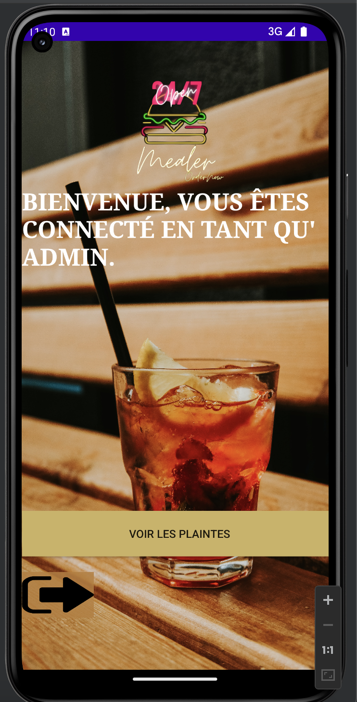
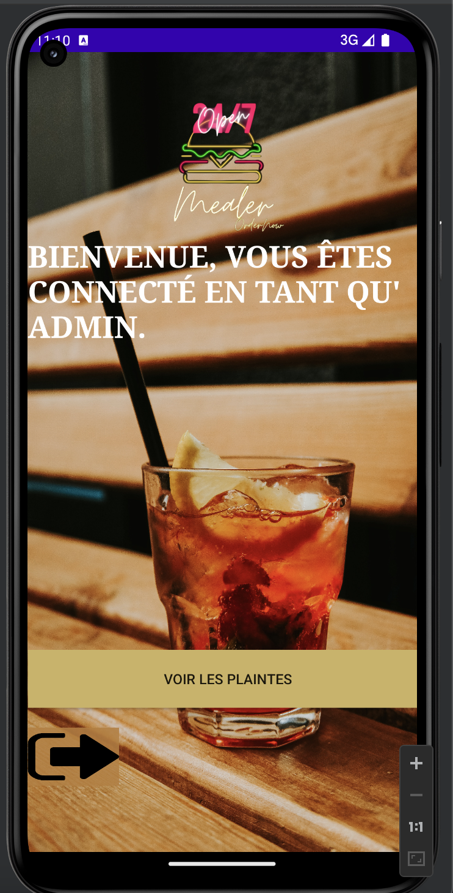
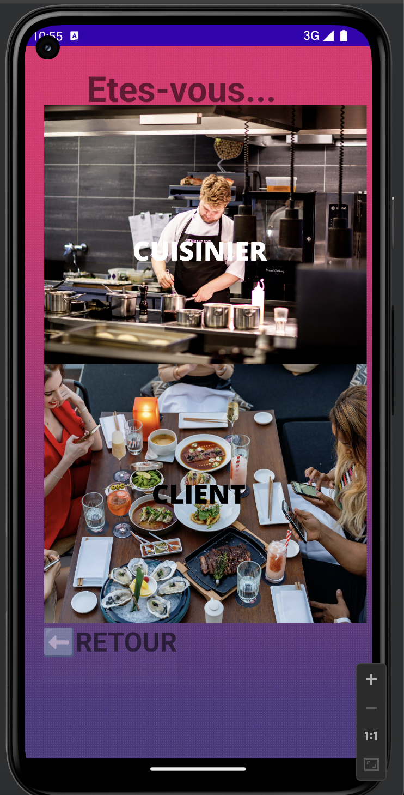
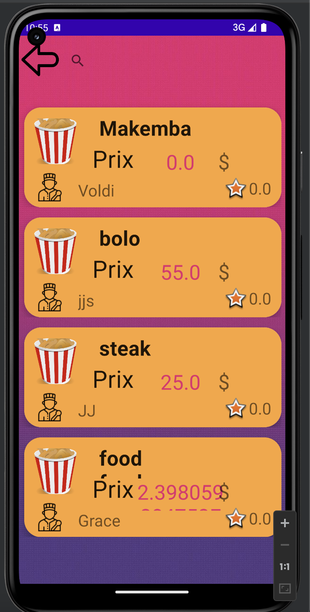
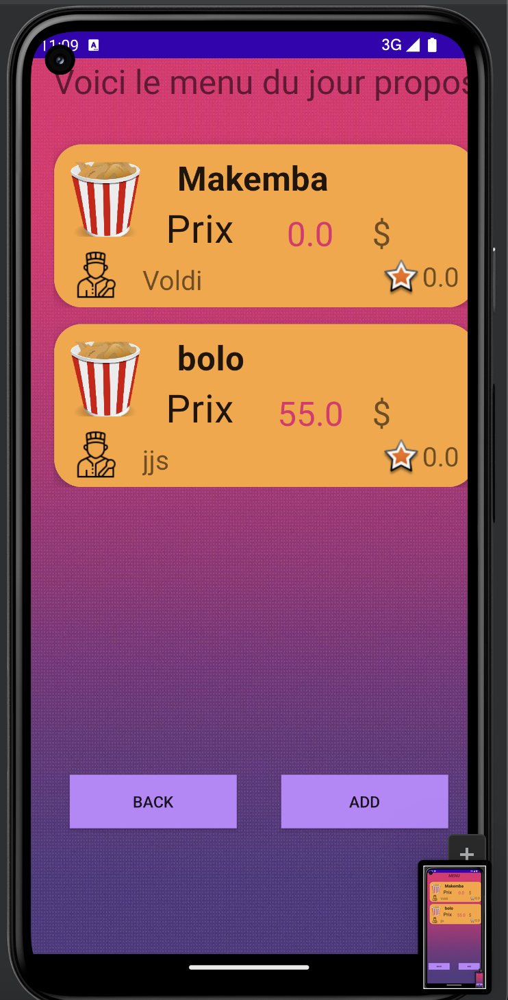
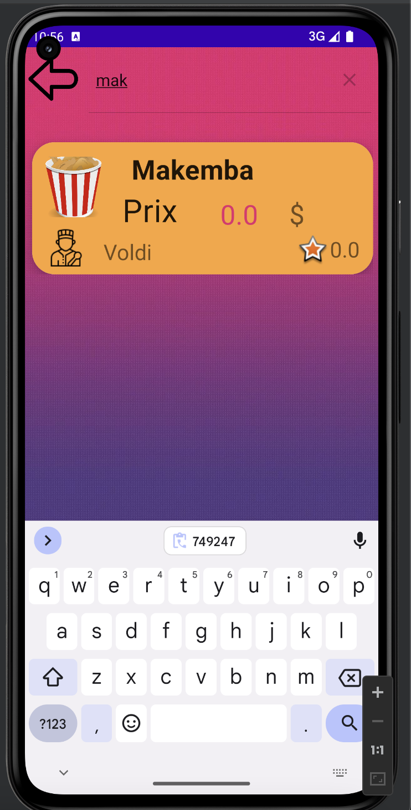
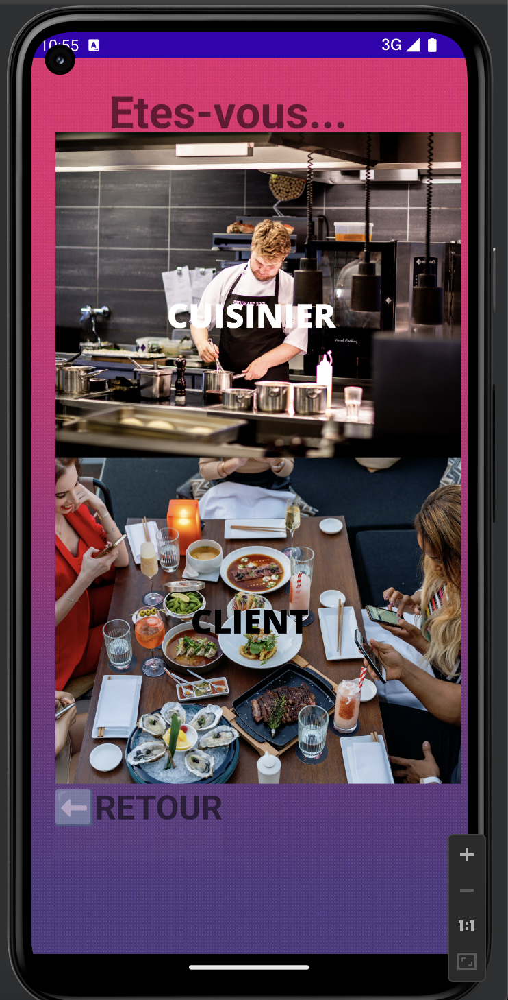
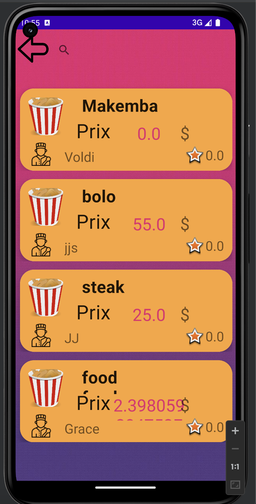
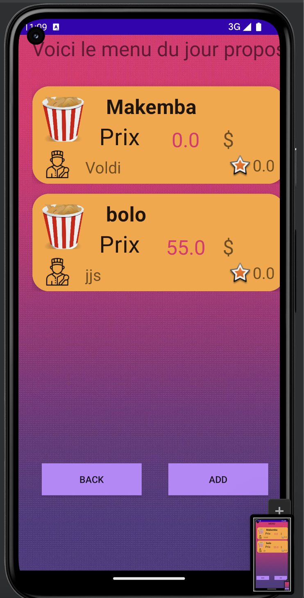
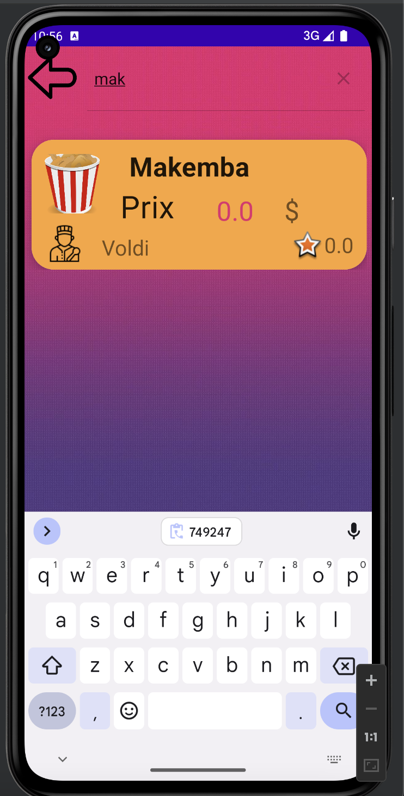

About the Project
Mealer is an Uber-like application designed for home-cooked meals instead of restaurant food. The platform connects clients with local cooks, offering a unique dining experience with home-prepared dishes. Mealer includes a robust authentication system with three types of accounts: Admin, Cook, and Client. We used CircleCI for continuous integration and deployement and Firebase for data storage.
Current Features
- Authentication System: Secure login and registration for Admin, Cook, and Client accounts using Firebase.
- Continuous Integration: Utilized CircleCI for automated testing and deployment.
- Data Storage: Used Firebase for secure and reliable data storage.
- Account Types: Different functionalities and interfaces for Admins, Cooks, and Clients.
- Admin Dashboard: Tools for managing users complatints and overseeing the platform.
- Cook Profiles: Create and manage profiles showcasing available meals, pricing, and reviews.
- Client Profiles: User profiles for browsing meals, placing orders, and leaving reviews.
- Order System: Seamless process for clients to order meals and for cooks to manage orders.
- Rating and Reviews: Clients can rate meals and leave reviews, helping others make informed choices.
- Notifications: Real-time updates for order status, meal preparation, and delivery.
Technologies Used
- Java
- Android Studio
- Firebase
- CircleCi
Team Members
- Voldi Monzambe
- Grâce Ramde
- Urbain Kodjo
- Khady
- Mor
Language
Links
UML Diagram

Project Demo
 

 







Conclusion
The development of Mealer provided us with significant learning experiences in creating a full-stack application. We enhanced our skills in front-end and back-end development, utilizing CircleCI for continuous integration to ensure consistent and reliable code deployment. We also leveraged Firebase for robust and scalable data storage, which streamlined our data management processes. Building the authentication system with distinct user roles (Admin, Cook, and Client) allowed us to understand the complexities of user management and security. This project not only improved our technical expertise but also taught us valuable lessons in project management and collaboration.